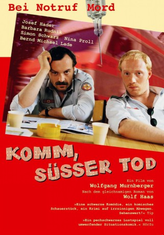
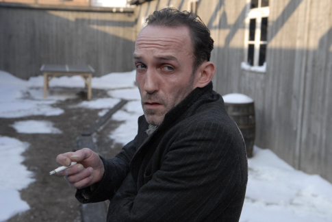
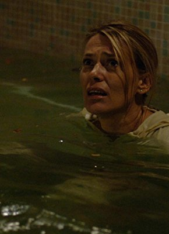

#4485 Komm, süßer Tod
Alternativ: Come Sweet Death (Originaltitel)
 
 IMDB-Wertung: 7.8 / 10
IMDB-Wertung: 7.8 / 10  Metascore: 0
Metascore: 0 
Hippokratischer Eid ade, hier kommen die Wiener Sanitäter. Zwischen den ansässigen Rettungsdiensten der Kreuzretter und dem Rettungsbund herrscht Krieg, jeder eingelieferte Notfall bedeutet Geld. Nach mehreren mysteriösen Todesfällen schwant jedoch sogar Fahrer Brenner Übles, denn unter anderem musste Kollege "Piefke" dran glauben. Als weder Kollegen noch Polizei sich zuständig zeigen, langt es Brenner. Er beschließt, trotz allgemeiner persönlicher Unlust und unbezwingbarem Hang zum Branntwein auf eigene Faust zu ermitteln.
Jahr: 2000
Dauer: 103 Minuten
FSK: 16
Land: Österreich Studio: absolut MEDIENTonspuren:
Untertitel:
Auflösung: SD (640x358) Größe: 1546 MB
Genre: Komödie, Mystery, Thriller
Regisseur: Wolfgang Murnberger
Drehbuch: Douglas Cook
Soundtrack:
Darsteller:
 Simon Schwarz als Berti
Simon Schwarz als Berti-  Karl Markovics als Jäger
- Andreas Sobik als Paul Stenzl
- Josef Hader als Simon Brenner
-  Barbara Rudnik als Klara
- Michael Schönborn als Junior
- Bernd Michael Lade als Gross
- Nina Proll als Angelika Lanz
- Reinhard Nowak als Munz
- Ingrid Burkhard als Imbiss-Rosi
- Gottfried Breitfuss als Kripomann
- Georg Veitl als Assistent von Kripomann
- Hermann Scheidleder als Buttinger
- Christian Weinberger als Bazooka
- Trude Ackermann als Jägers Mutter
- Ulli Fessl als Sekretärin
- Brigitte Antonius als Frau Ruprechter
- Reinhard Simonischek als Lanz
- Elisabeth Stiepl als Rentnerin
- Bernd Jeschek als Jürgen Palina
- Gerhard Ernst als Walter Watzek
- Jutta Fastian als Irmi
- Günter Rainer als Hundeherrchen
- Zeljko Loncar als Sanitäter II, RB
- David Oberkogler als Sanitäter I, RB
- Michaela Kaspar als Kellnerin
- Louie Austen als Pokerspieler
- Trude Fukar als Alte Dame
Datei: X:\4-Tetralogie(A-K)\Brenner\Komm, süßer Tod (2000, FSK16, 640x358).mkv seit 26.09.2016
Festplatte: HD Collection-3(N-Z)-6(A-Z)
 Es gibt insgesamt 7 Filme in der Gruppe '4-Tetralogie(A-K)\Brenner'
Es gibt insgesamt 7 Filme in der Gruppe '4-Tetralogie(A-K)\Brenner'